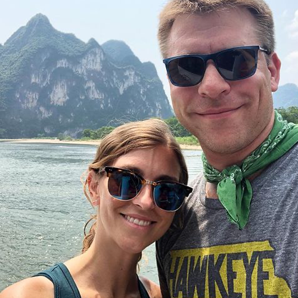
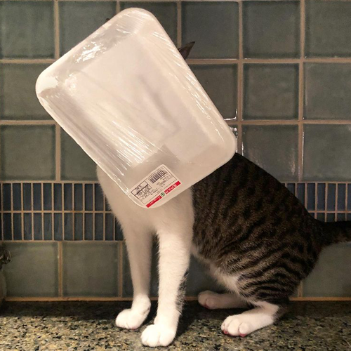

Designer + creative thinker.
Expat + traveler.
I’ve made design problem-solving my career.
My design career is rooted in editorial design, which means my process doesn’t start with visual components, but rather with content. At Imagination Publishing in Chicago, where my career began, I learned the subtle art of using visual cues to guide readers through content and ensure message clarity—something I like to think of as UX beta. At Georgetown University in Qatar, I’ve expanded my skill set, learning the not-so-subtle art of connecting financial directives to creative ones while overseeing a range of projects at a multicultural, multilingual organization. By doing my research, asking users what they think, and iterating until an obvious answer emerges, I can solve problems before they're even noticed.
I moved overseas a few years ago, so I spend a lot of time in airports—humanity’s ubiquitous travel headache. Airports can be excellent examples of good design, but often, they’re the opposite. Each time I walk through a new terminal, I pay attention to the signage around me. Individually, each sign tells a simple message: bathrooms are that way, put out that cigarette, your flight is canceled. But taken together, they are a complex and efficient visual solution to the problem of how to get thousands of people from different countries, speaking different languages, from point A to point B.
The ability to help people by making complicated things simpler, even if the audience doesn’t consciously notice, is powerful, and airports always remind me why I chose to be a part of that creative process.
Find me on Instagram
 “
Done well, design isn’t simply making things look pretty, it’s the art of communication; it’s ensuring your message is heard when words aren’t enough.